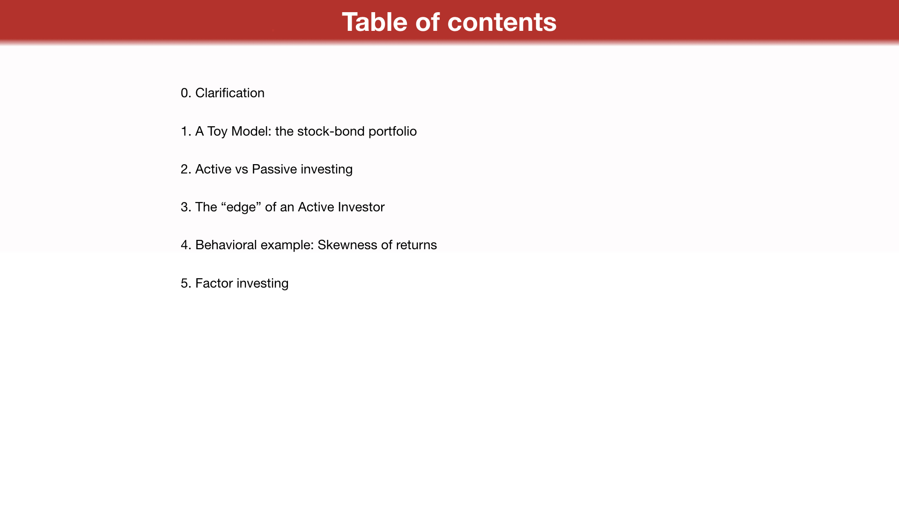
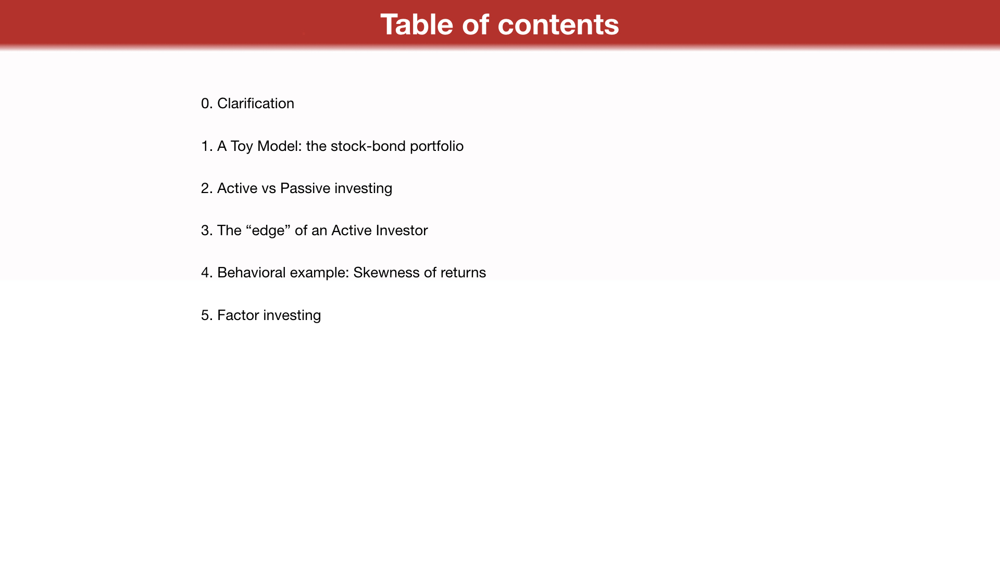
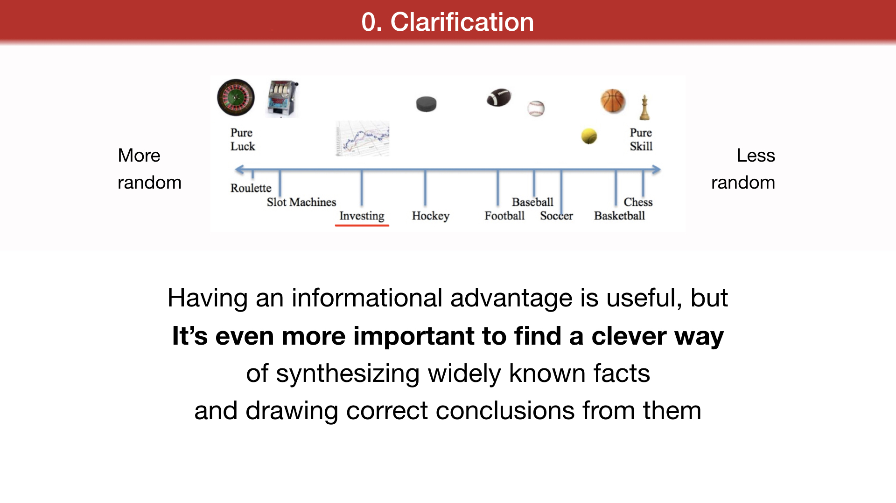
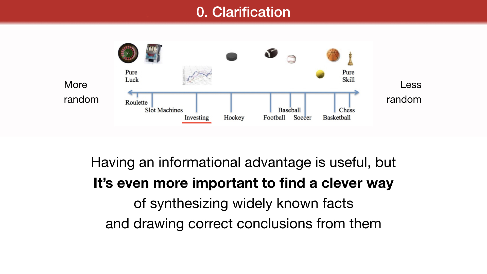

How can a widely known investment strategy still work and be profitable?
Grzegorz Link
Opoka TFI S.A.
Faculty of Physics, University of Warsaw April 30, 2019
Table of contents
0. Clarification
1. A Toy Model: the stock-bond portfolio
2. Active vs Passive investing
3. The "edge" of an Active Investor
4. Behavioral example: Skewness of returns 5. Factor investing
0. Clarification
More random
Less random
There is a common myth about investing:
that in finance the smartest guy in the room wins.
I've come to believe this in not the case.
This is true in highly technical fields:
physics, medical surgery or chess,
where randomness is a thing of lesser importance.
In investing, success is more about "street smarts" than "book smarts".
You need to find a way to deal with randomness.
Having an informational advantage is useful, but
It's even more important to find a clever way
of synthesizing widely known facts
and drawing correct conclusions from them
and surviving volatility along the way.
the goal of an investor is to achieve profits, mitigating risks.
investment strategy = a set of rules / algorithms / one undertakes in the investment space in order to achieve profit on a risk-
adjusted basis. Systematically involves taking advantage of some known phenomenon in the investment space. "working" strategy = one that completes the above mentioned task
"unworking" strategy = one that fails, for example does not return profits above a risk-free rate, or does achieve profits but with oversized risks along the way (not „risk-adjusted" profits).
a simple example of a strategy is a passive „buy and hold an index ETF" strategy.
a more advanced example is to hold a portfolio of, i.e. 60% stocks, 40% bonds, and rebalance the portfolio once yearly (to correct for the difference in returns through the previous year). A more advanced example is stock-selection.
1. A Toy Model: the stock-bond portfolio
source data:
http://pages.stern.nyu.edu/~adamodar/New_Home_Page/datafile/histretSP.html
The raw data for treasury bond and bill returns is obtained from the Federal Reserve database in St. Louis (FRED). The return on stocks includes both price appreciation and dividends. The treasury bond is the constant maturity 10-year bond, but the treasury bond return includes coupon and price appreciation.
Not just a toy?
source: philosophical economics
http://www.philosophicaleconomics.com/2018/01/future-u-s-equity-returns-a-best-case-upper-limit/ compiled from government (federal reserve) data. Fixed income includes bonds, cash and equivalents, equity exposure includes domestic and foreign equity
2. Active vs Passive investing
Choosing a fixed stock / bond index such as above is called passive investing. Recent years have seen a steady rise in passive investing, with many advocates of
buying and holding an appropriate index ETF.
source: "The Shift from Active to Passive Investing: Potential Risks to Financial Stability?", Anadu et al., Federal Reserve Bank of Boston working paper, 2018
source: Financial Times
The main upside is much lower fees
The risk is having more downside during tougher years
sources: Nomura Instinet, Joseph Mezrich, MarketWatch:
https://www.marketwatch.com/story/how-should-active-management-fit-into-ones-portfolio-2017-03-25 , Morningstar
The main upside is much lower fees than in traditional asset management, and a usually better-than-active return during expansionary markets.
The risk is having more downside during tougher years (which is mostly underrepresented in recent years), and suffering even more if an investor will change his approach during more turbulent market environments (what is common among investors).
Whenever an investor departs from such a passive approach, for example striving to achieve better-than-market returns through insight or skill, she becomes an active investor.
3. The "edge" of an Active Investor
"To be an active investor, you must believe in inefficiency to get opportunities, and in efficiency for those opportunities to turn into returns"[1]
"Who Is On the Other Side?",
Michael J. Mauboussin (Director of Research, Blue Mountain Capital Management), 2019
I recommend starting with this report if one is interested in figuring out a systematic active investment approach. The author encourages us to ask, whenever we trade on a market: who is on the other side? Whom are we playing against, and why do we believe to have an advantage?
[1] source:
https://www.bluemountaincapital.com/wp-content/uploads/2019/02/Who-Is-On-the-Other-Side.pdf
In order to be successful, an investor must consistently find and exploit some inefficiencies of a financial market. Micheal Mauboussin identifies 4 such main inefficiency areas:
1.Behavioral (i.e. sentiment analysis)
2.Analytical (i.e. skill in correct inferring from incomplete data or more know-how in a specific area) 3.Informational (i.e. institutional advantage over individual investors)
4.Technical (i.e. index rebalancing or fund flows)
4. Behavioral example: Skewness of returns
source:
https://twitter.com/ukarlewitz
General skew types
source: Wikipedia,
https://commons.wikimedia.org/wiki/File:Negative_and_positive_skew_diagrams_(English).svg, This file is licensed under the Creative Commons Attribution-Share Alike 3.0 Unported license.
Skewness of 3 select market trading strategies
Strategy 1 Strategy 2 Strategy 3
source: own work at Opoka TFI
Sensitivity to outliers
source: own work at Opoka TFI
Skew is time dependent, as financial data is not stationary
source (left):
https://www.investopedia.com/articles/trading/07/stationary.asp
source (lower): The Fat Pitch blog,
https://fat-pitch.blogspot.com/2019/04/summary-ndx-is-now-at-new-all-time-high.html, data:
stockcharts.com
SP500 index
SP500 volatility index (VIX)
Skew is different for different asset classes:
- bonds have a negative skew (small returns most of the times, defaults some times)
estimates of skew, originally by
https://earlyretirementnow.com/2017/07/12/we-are-so-skewed/ , modified]
Skew is different for different asset classes:
- bonds have a negative skew (small returns most of the times, defaults some times)
- a stock index has slightly negative skew (volatility is higher in crises and bear markets) - a set of individual stocks has positive skew
source: JP Morgan research:
http://read.jpmorgan.com/i/371035-eotm-special-edition/5
source: Artur Sepp,
https://artursepp.com/2018/04/24/trend-following-strategies-for-tail-risk-hedging-and-alpha-generation/
Skew is time dependent, as financial data is not stationary.
Skew is different for different asset classes:
- bonds have a negative skew (small returns most of the times, defaults some times)
- a stock index has slightly negative skew (volatility is higher in crises and bear markets) - a set of individual stocks has positive skew
Any given investor might exhibit a preference for a skew profile different than the market he invests in. That gives rise to possibilities of exchange between players, and therefore, return on risk.
Skew is sensitive to outliers.
negative skew positive skew
mean > 0
mean < 0
Example of 4 types of strategies: randomly generated returns[2]
[1] source: Wikipedia,
https://commons.wikimedia.org/wiki/File:Negative_and_positive_skew_diagrams_(English).svg, This file is licensed under the Creative Commons Attribution-Share Alike 3.0 Unported license.
[2] source: own work at Opoka TFI
4a. Traps
"It's remarkable how much long-term advantage people like us have gotten by trying to be consistently not stupid, instead of trying to be very intelligent."
Charlie Munger
Trading and investing is mainly about correct decision making in an environment of severe uncertainty.
source (left):
https://commons.wikimedia.org/wiki/File:Stages_of_a_bubble.png
source (right):
https://www.businessinsider.com/this-chart-shows-just-how-big-the-bitcoin-bubble-has-become-2017-11
Uncertainty is something more than just risk. Risk can be measured and risk can be assessed.
Risk is in a way: measuring all known possible outcomes and weighing in their probabilities.
Uncertainty is something deeper: beside the known risks, it also encompasses things we do know about, the unmeasurable outcomes (like the popular idea of black swans, but not only these types of events), and also the dynamics of certain scenarios unfolding. Severe risks, even known ones but happening in a certain order, or all at once, may result in far more damage to a portfolio, than the same risks happening in a more "random", non-correlated manner.
Sequence matters
in the non-ergodic world of investing.
[Taleb, "The Logic of Risk Taking", part of "Skin in the Game",
Incerto series, 2018. ISBN: 978-0425284629]
[Gell-Man, Peters: "Evaluating gambles using dynamics"
https://arxiv.org/pdf/1405.0585.pdf]
[Peters: "Optimal leverage from non-ergodicity"
https://arxiv.org/pdf/0902.2965.pdf]
source: Nassim Nicholas Taleb,
https://medium.com/incerto/the-logic-of-risk-taking-107bf41029d3
Some of these traps are our own cognitive biases. A comprehensive manual on these biases is given in Kahneman and Tversky's research
(Kahneman, "Thinking Fast and Slow", 2011, ISBN: 978-0374275631). Among them:
loss aversion (investors perceive a dollar lost and a dollar gained differently than their percentage value), overconfidence (confidence greater than predicting abilities),
confirmation bias (viewing information that confirms our view as more important),
availability heuristic (focusing more on recent data and developments, fresh data as more important).
Yet, as Mauboussin points out, it is not simply the existence of individual biases that spurs behavioral inefficiencies on a market. They could be, hypothetically, cancelling each other out.
It is an extreme correlation between opinions among market participants that is dangerous, when the "wisdom of crowds" turns to the "madness of crowds".
5. Factor investing
A popular quantitative investing technique in recent years is called "factor investing" or "smart beta".
It relies on "factors" - quantifiable features that explain differences in stock returns of a subset of stocks
vs a market index.
More that 300 such factors have been identified in financial research literature throughout five decades[1], a situation referred to as "the factor zoo", although for most there have been replication problems reported in recent years[2].
Nonetheless the remaining factors have strong research backing. Among the most impactful and widely implemented:
value,
momentum,
growth,
size,
quality, low-volatility, dividend yield.
[1] see: "...and the Cross-Section of Expected Returns", Harvey et al, 2015 [2] see: "Replicating Anomalies", Hou et al., 2017
source: MSCI (Data normalized from Jan. 1, 1975 with factor tilts on MSCI World Index) via ETF.com:
https://www.etf.com/sections/blog/new-msci-indexes-erase-smart-beta
source: Providing Alpha In A Smart Beta World, Arne Staal, Standard Life Investments research paper,
https://www.valuewalk.com/2016/10/providing-alpha-smart-beta-world/
source: Defense Beyond Bonds: Defensive Strategy Indices, Fei Mei Chan and Craig J. Lazzara, research by S P Dow Jones Indices, a Division of S P Global
Currently state of the Growth-vs-Value debate:
source: sentimentrader.com, MSCI index data
Conclusions
-there exist a variety of successful investment strategies that are well known and publicly available, yet are unsuitable for some or even most investors
-a winning strategy possesses an "edge" due to either:
informational, analytical, behavioral or technical advantages over other market participants
-skewness and sensitivity to tail risk scenarios explain some of the potential payoffs for following such a strategy
-a need to survive volatility are also obstacles an investor must tackle. Not all investors manage to do so
-behavioral biases and overcrowding trends can lead to fluctuations between the profitability of a known strategy. When a strategy "falls out of favor" and is less widely adopted, it can regain it's previous potential of higher profitability
...which explains how a popular, widely known strategy can survive and continue to be profitable.
As a side note:
The popularity of a strategy lowers it's "edge", or gain over a random, passive market strategy, although it rarely depletes the strategy completely.
Further reading
"How Can a Strategy Everyone Knows About Still Work?" - A great research article by Cliff Asness, CEO of AQR Capital Management.
Further investigation of the effects of overcrowding on popular factor-style investing strategies (impact on profitability and on liquidity)
https://www.aqr.com/Insights/Perspectives/How-Can-a-Strategy-Still-Work-If-Everyone-Knows-About-It
"Who Is On the Other Side?" by Michael J. Mauboussin, Director of Research, Blue Mountain Capital Management. A perfect starting point in discussing sources of potential advantages to active investing.
https://www.bluemountaincapital.com/wp-content/uploads/2019/02/Who-Is-On-the-Other-Side.pdf
A comprehensive study of over 300 different investing factors reported in financial research papers is done by Harvey, Campbell R. and Liu, Yan and Zhu, Caroline, "...and the Cross-Section of Expected Returns" (February 3, 2015). Available at SSRN:
https://ssrn.com/abstract=2249314 or
http://dx.doi.org/10.2139/ssrn.2249314
The authors argue that a much more rigorous statistical procedure for testing significance of a perceived discovery is appropriate for such studies, to account for non-reported failed discoveries and rule out data-mining, resulting in much less actual factors being statistically significant.
A similar test was done in Hou et al., "Replicating Anomalies", 2017.
http://www.nber.org/2018LTAM/hou.pdf
Thank you for your attention
And please remember: none of this is investment advice. Investors invest at their own risk. All works cited are copyrighted to their respective owners and sources.
Bonus slides
One interesting work[1] uses factors and regression analysis to "reverse engineer" the impressive returns of Warren Buffett's Berkshire Hathaway[2] investment conglomerate:
[1] source:
https://www.factorresearch.com/research-warren-buffett-the-greatest-factor-investor-of-all-time [2] source: Frazzini, Kabiller, Pedersen, "Buffett's Alpha",
https://tandfonline.com/doi/full/10.2469/faj.v74.n4.3
 



 



.svg){kind=link}
{kind=link}